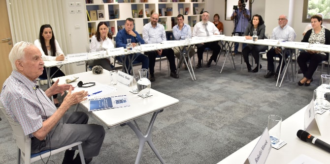
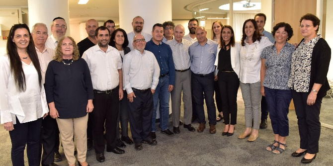

גולת הכותרת של המפגש הייתה ההזדמנות שניתנה לבוגרים להיפגש עם מר מורטון מנדל. תחילה הציגו הבוגרים את עצמם ואת עשייתם החינוכית-חברתית, ומר מנדל החמיא להם וציין שבעשייתם ובמימוש חזונם הם מסייעים בהגשמת חלומו-שלו לתרום לשגשוגה של מדינת ישראל.
לדבריו, תפקיד של חבר בוועד מנהל הוא הזדמנות להשפיע על הארגון ולשפר אותו ואת המציאות. הוא הדגיש את החובה להיות כוח חיובי וקונסטרוקטיבי בוועד המנהל ולהדגים מנהיגות חזקה וחיובית. מר מנדל ציין כי התמורה שהאדם מפיק מתפקיד זה לרוב אינה תמורה כספית, אלא יכולת לומר לעצמו שהארגון השתפר בזכות היותו חלק מהוועד המנהל שלו.
מר מנדל ציין שהתכונות החשובות ביותר לחבר ועד מנהל הן מחויבות – כלומר שעליו להשתתף בכל הישיבות, ורצינות– חבר הוועד המנהל חייב "להכין שיעורי בית", להתכונן לישיבות בקפידה, לקרוא את כל החומרים הרלוונטיים ולהגיע מוכן לדיון. הוא ציין שחבר ועד מנהל לא צריך להסס להתפטר אם הארגון שינה את משימתו ויעדיו, ואלה אינם עולים עוד בקנה אחד עם ערכיו.
מר מנדל הדגיש את חשיבותם של הערכים כמצפן להתנהלות: יושרה, כנות, כבוד ונדיבות הם ערכים שצריכים לשמש נר לרגליו של כל אדם ולהכתיב את עשייתו. לדבריו, על הבוגרים להיות "פייטרים" וללחום למען התנהלות תקינה של הוועד המנהל שהם חלק ממנו. בעיניו, הצלחה היא היכולת להסתכל במראה ולהיות גאה במי שהיית ובמי שאתה, לראות את בבואתך המשתקפת אליך ולחוש גאווה ("מענטש" ביידיש). מר מנדל התייחס לשאלה בנושא מערכת היחסים בין היו"ר למנכ"ל ואמר שאחריותו של היו"ר לוודא שהמנכ"ל פועל על-פי עקרונות הארגון, שזו אינה התערבות אלא פיקוח, ושזו חובתו של היו"ר. יחד עם זאת ציין כי הדבר צריך להיעשות בכבוד ובדיסקרטיות. בסוף המפגש המרתק והמרגש הודו הבוגרים למר מנדל על שחלק עמם את תובנותיו.

עו"ד יואב ללום, בוגר מחזור כ"ג של בית ספר מנדל למנהיגות חינוכית, המשתתף בתכנית, הרצה בפתיחת המפגש על ניגוד עניינים ומשוא פנים במשפט המנהלי. הוא הציג את תחום ניגוד העניינים במשפט המנהלי, שממנו נגזרו כללי ניגוד העניינים בדיני התאגידים. ללום הבחין בין ניגוד עניינים אישי, ניגוד עניינים מוסדי ומשוא פנים. כמו כן הציג נושאים כגון ניגוד עניינים של ועדות מינויים, תוצאות הפרת האיסור על ניגוד עניינים, וכיצד אפשר למנוע ניגוד עניינים. ללום הציג דוגמאות לכשלים ביישום הכללים.
רו"ח לימור אדרי-אלימלך, מרצה ויועצת לארגונים עסקיים וחברתיים בתחום הניהול הפיננסי, הרצתה על דוחות כספיים. היא הציגה ידע וכלים לניתוח המידע המוצג בדוחות והדגישה שהדירקטור או חבר הוועד המנהל חייב להבין את הדוחות הכספיים ולא להסתמך על ידע של בעלי תפקידים אחרים בחברה. לדבריה, אי-אפשר להסתפק בקריאת דוחות כספיים במנותק מן השטח: הדוחות הם תקציר בלבד, והבנת המשמעויות הפיננסיות של המידע המוצג בדוח דורשת למידה נוספת והרחבת הפרספקטיבה באמצעות מפגשים עם אנשי הארגון בשטח ובחינת תהליכים ופעילות שמתבצעים בפועל.
אייל גלובוס, ראש רשות התאגידים במשרד המשפטים, הרצה לבוגרים על רגולציה במגזר השלישי ועל הדומה והשונה בתפיסת תפקידו וחובותיו של דירקטוריון בחברה העסקית ובוועד המנהל בעמותה. גלובוס סקר את המבנה הארגוני של רשות התאגידים ואת ייעודה, הבחין בין רשם החברות והשותפויות – שמטרתו להיות גוף תומך למגזר העסקי, לחיי המסחר ולהתנהלות הכלכלית במשק – לבין רשם העמותות וחברות לתועלת הציבור, המופקד על הבטחת התנהלותם התקינה של תאגידים ללא כוונת רווח. הוא ציין כי הפיקוח על ארגונים ללא כוונת רווח גדול יותר, שכן מדובר בכספי ציבור וממשלה. גלובוס סקר את האסיפה הכללית, ועד מנהל/דירקטוריון, ועדת ביקורת, רו"ח מבקר והמבקר הפנימי – מוסדות חובה בכל עמותה או חל"צ, וכן סקר את העקרונות המנחים, את האתגרים ואת השחקנים העיקריים בזירת הרגולציה על תאגידים ללא כוונת רווח.

{kind=link}
{kind=link}